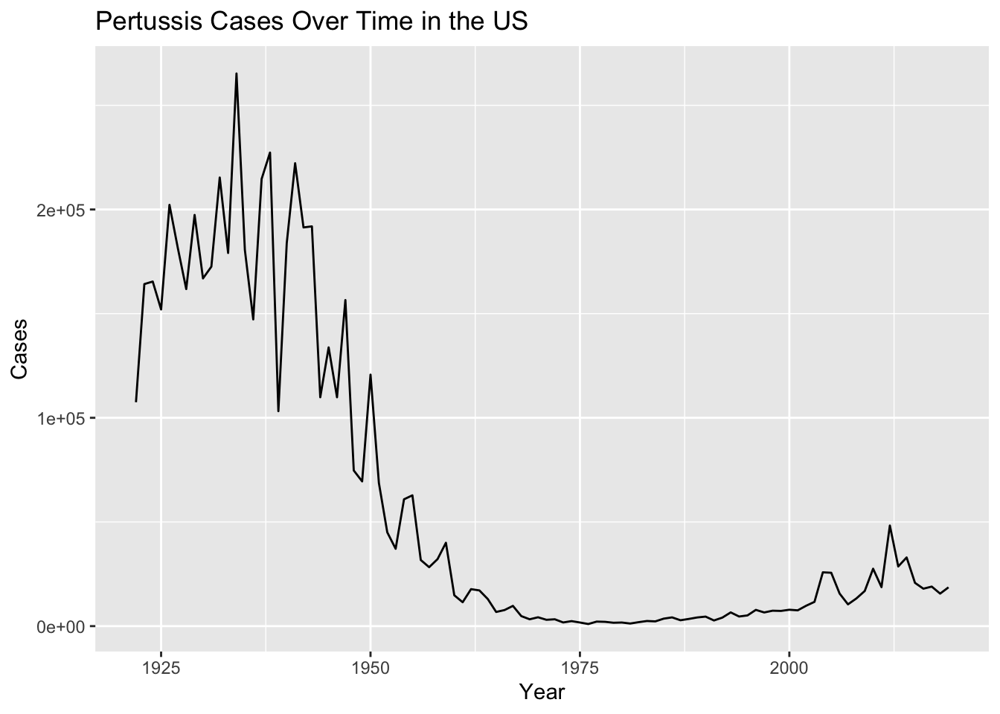
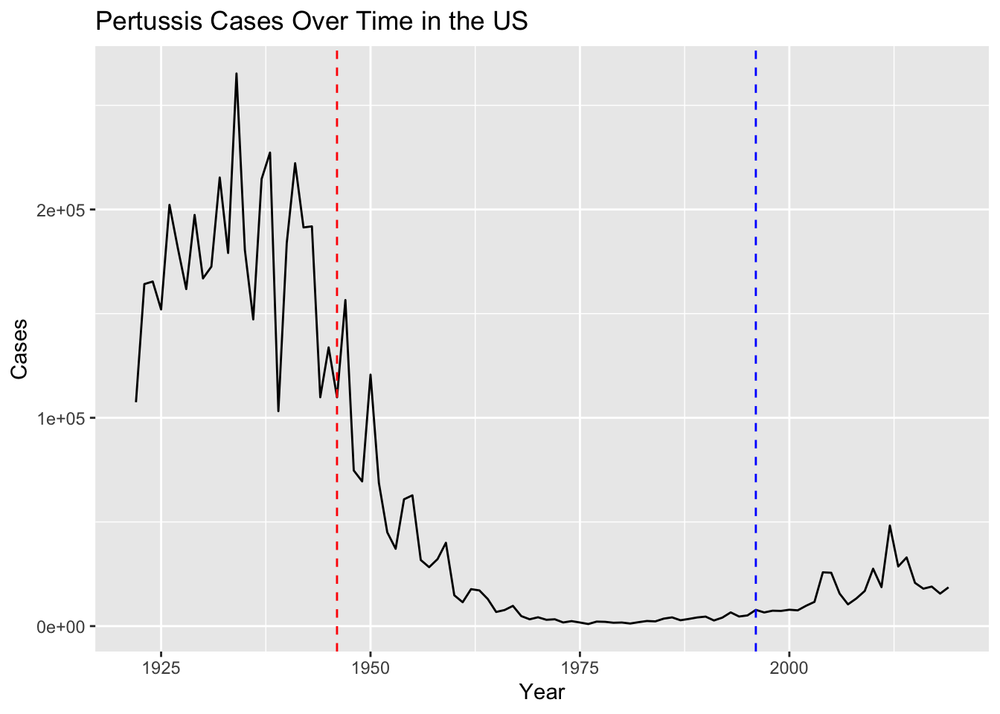
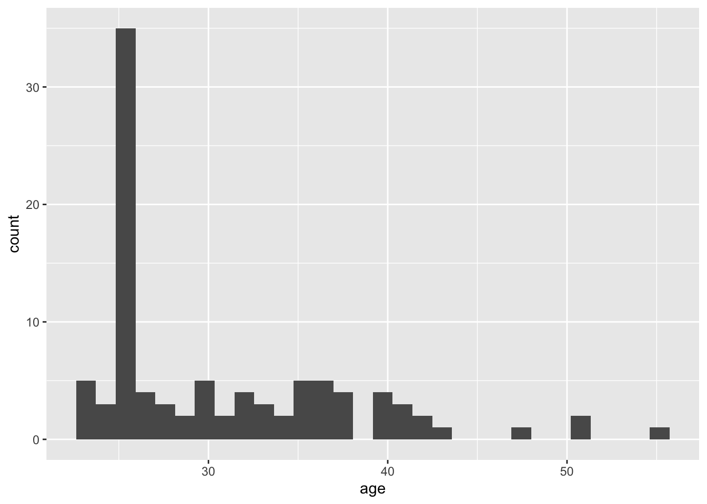
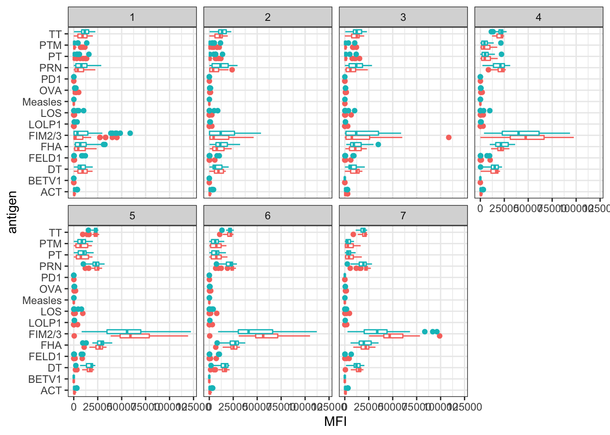

#not adding data frame to PDF
cdc <- data.frame(
Year = c(1922L,1923L,1924L,1925L,
1926L,1927L,1928L,1929L,1930L,1931L,
1932L,1933L,1934L,1935L,1936L,
1937L,1938L,1939L,1940L,1941L,1942L,
1943L,1944L,1945L,1946L,1947L,
1948L,1949L,1950L,1951L,1952L,
1953L,1954L,1955L,1956L,1957L,1958L,
1959L,1960L,1961L,1962L,1963L,
1964L,1965L,1966L,1967L,1968L,1969L,
1970L,1971L,1972L,1973L,1974L,
1975L,1976L,1977L,1978L,1979L,1980L,
1981L,1982L,1983L,1984L,1985L,
1986L,1987L,1988L,1989L,1990L,
1991L,1992L,1993L,1994L,1995L,1996L,
1997L,1998L,1999L,2000L,2001L,
2002L,2003L,2004L,2005L,2006L,2007L,
2008L,2009L,2010L,2011L,2012L,
2013L,2014L,2015L,2016L,2017L,2018L,
2019L),
Cases = c(107473,164191,165418,152003,
202210,181411,161799,197371,
166914,172559,215343,179135,265269,
180518,147237,214652,227319,103188,
183866,222202,191383,191890,109873,
133792,109860,156517,74715,69479,
120718,68687,45030,37129,60886,
62786,31732,28295,32148,40005,
14809,11468,17749,17135,13005,6799,
7717,9718,4810,3285,4249,3036,
3287,1759,2402,1738,1010,2177,2063,
1623,1730,1248,1895,2463,2276,
3589,4195,2823,3450,4157,4570,
2719,4083,6586,4617,5137,7796,6564,
7405,7298,7867,7580,9771,11647,
25827,25616,15632,10454,13278,
16858,27550,18719,48277,28639,32971,
20762,17972,18975,15609,18617)
)Class 18 Pertussis Mini Project
Is Pertussis on the rise
Install packages - datapasta
don’t need to Load library! We can click Addins button instead and paste as data frame - one way to scrape data from the internet. Downside is, we need to make sure to copy/paste accurately
Data copied from: https://www.cdc.gov/pertussis/surv-reporting/cases-by-year.html
Q1. With the help of the R “addin” package datapasta assign the CDC pertussis case number data to a data frame called cdc and use ggplot to make a plot of cases numbers over time.
library(ggplot2)baseplot <- ggplot(data = cdc) +
aes(x = Year, y = Cases) +
geom_line() +
labs(title = "Pertussis Cases Over Time in the US")
baseplot
Q2. Using the ggplot geom_vline() function add lines to your previous plot for the 1946 introduction of the wP vaccine and the 1996 switch to aP vaccine (see example in the hint below). What do you notice?
#Adding a vline for the introduction of the first pertussis vaccine in 1996 and the change in formulation of the vaccine in 1996
baseplot +
geom_vline(xintercept = 1946, color = "red", linetype = 2) + geom_vline(xintercept = 1996, color = "blue", linetype =2)
Q3. Describe what happened after the introduction of the aP vaccine? Do you have a possible explanation for the observed trend?
The pertussis strain could be mutating and the vaccine formulation could be less effective; alternately, the new vaccine formulation could be less effective versus the one formulated from the whole bacteria. Or, it could be a decrease in vaccination rates due to the paper from 2006. Evidence suggests that it’s not variation in the bacteria that causes pertussis, but it might be waning efficacy due to the new formulation of the pertussis vaccine.
Installing the jsonlite package Loading in the library
library(jsonlite)Reading a json file from the website:
subject <- read_json("https://www.cmi-pb.org/api/subject", simplifyVector = TRUE)
head(subject, 3) subject_id infancy_vac biological_sex ethnicity race
1 1 wP Female Not Hispanic or Latino White
2 2 wP Female Not Hispanic or Latino White
3 3 wP Female Unknown White
year_of_birth date_of_boost dataset
1 1986-01-01 2016-09-12 2020_dataset
2 1968-01-01 2019-01-28 2020_dataset
3 1983-01-01 2016-10-10 2020_datasetQ4. How many aP and wP infancy vaccinated subjects are in the dataset?
wP: 49, aP = 47
table(subject$infancy_vac)
aP wP
47 49 Q5. How many Male and Female subjects/patients are in the dataset?
F: 66 M: 30
table(subject$biological_sex)
Female Male
66 30 Q6. What is the breakdown of race and biological sex (e.g. number of Asian females, White males etc…)?
table(subject$race, subject$biological_sex)
Female Male
American Indian/Alaska Native 0 1
Asian 18 9
Black or African American 2 0
More Than One Race 8 2
Native Hawaiian or Other Pacific Islander 1 1
Unknown or Not Reported 10 4
White 27 13Dates
head(subject$year_of_birth, 3)[1] "1986-01-01" "1968-01-01" "1983-01-01"head(subject$date_of_boost, 3)[1] "2016-09-12" "2019-01-28" "2016-10-10"library(lubridate)Loading required package: timechange
Attaching package: 'lubridate'The following objects are masked from 'package:base':
date, intersect, setdiff, uniontoday()[1] "2022-11-30"today() - ymd("2000-01-01")Time difference of 8369 daystime_length( today() - ymd("2000-01-01"), "years")[1] 22.91307Making a new column for age of all subjects in the trial
subject$age <- time_length( today() - ymd(subject$year_of_birth), "years")
head(subject, 3) subject_id infancy_vac biological_sex ethnicity race
1 1 wP Female Not Hispanic or Latino White
2 2 wP Female Not Hispanic or Latino White
3 3 wP Female Unknown White
year_of_birth date_of_boost dataset age
1 1986-01-01 2016-09-12 2020_dataset 36.91170
2 1968-01-01 2019-01-28 2020_dataset 54.91307
3 1983-01-01 2016-10-10 2020_dataset 39.91239Q7. Using this approach determine (i) the average age of wP individuals, (ii) the average age of aP individuals; and (iii) are they significantly different?
summary(subject$age) Min. 1st Qu. Median Mean 3rd Qu. Max.
22.91 25.91 27.91 30.77 34.91 54.91 Q8:
Q9. With the help of a faceted boxplot or histogram (see below), do you think these two groups are significantly different?
Making a histogram
base_hist <- ggplot(subject) +
aes(age) +
geom_histogram()
base_hist`stat_bin()` using `bins = 30`. Pick better value with `binwidth`.
Facet wrapping by type of vaccine shows the point at which the aP vaccine was introduced
base_hist +
facet_wrap(vars(infancy_vac), nrow = 2)`stat_bin()` using `bins = 30`. Pick better value with `binwidth`.
Using dplyr to join different tables together - get specimen table and join with subject to have all information in one place
library(dplyr)
Attaching package: 'dplyr'The following objects are masked from 'package:stats':
filter, lagThe following objects are masked from 'package:base':
intersect, setdiff, setequal, unionRead the specimen table
specimen <- read_json("https://www.cmi-pb.org/api/specimen", simplifyVector = TRUE) look at specimen table:
head(specimen, 3) specimen_id subject_id actual_day_relative_to_boost
1 1 1 -3
2 2 1 736
3 3 1 1
planned_day_relative_to_boost specimen_type visit
1 0 Blood 1
2 736 Blood 10
3 1 Blood 2Q9. Complete the code to join specimen and subject tables to make a new merged data frame containing all specimen records along with their associated subject details:
Using a join function to bring the tables together. It will automatically find what’s in common between the tables, which here is “subject_id”, and joins them together – same number of rows as in specimens, but with extra columns from subject
library(dplyr)meta <- inner_join(specimen, subject)Joining, by = "subject_id"dim(meta)[1] 729 14Now reading some experimental data
titer <- read_json("https://www.cmi-pb.org/api/ab_titer", simplifyVector = TRUE)
head(titer) specimen_id isotype is_antigen_specific antigen MFI MFI_normalised
1 1 IgE FALSE Total 1110.21154 2.493425
2 1 IgE FALSE Total 2708.91616 2.493425
3 1 IgG TRUE PT 68.56614 3.736992
4 1 IgG TRUE PRN 332.12718 2.602350
5 1 IgG TRUE FHA 1887.12263 34.050956
6 1 IgE TRUE ACT 0.10000 1.000000
unit lower_limit_of_detection
1 UG/ML 2.096133
2 IU/ML 29.170000
3 IU/ML 0.530000
4 IU/ML 6.205949
5 IU/ML 4.679535
6 IU/ML 2.816431Q10. Now using the same procedure join meta with titer data so we can further analyze this data in terms of time of visit aP/wP, male/female etc.
Join the titer table with the meta table!
abdata <- inner_join(meta, titer)Joining, by = "specimen_id"dim(abdata)[1] 32675 21Q11. How many specimens (i.e. entries in abdata) do we have for each isotype?
table(abdata$isotype)
IgE IgG IgG1 IgG2 IgG3 IgG4
6698 1413 6141 6141 6141 6141 Q12. What do you notice about the number of visit 8 specimens compared to other visits?
Much fewer of them! So, we will drop this from our data, as well as focus in on one isotype - I will use IgG1
table(abdata$visit)
1 2 3 4 5 6 7 8
5795 4640 4640 4640 4640 4320 3920 80 Making a plot for titer levels of different antiboides
ggplot(abdata) +
aes(MFI, antigen) +
geom_boxplot() Warning: Removed 1 rows containing non-finite values (stat_boxplot).
Will define ig1 as dataset for only IgG1 and without visit 8:
ig1 <- abdata %>%
filter(isotype == "IgG1", visit != 8)
head(ig1) specimen_id subject_id actual_day_relative_to_boost
1 1 1 -3
2 1 1 -3
3 1 1 -3
4 1 1 -3
5 1 1 -3
6 1 1 -3
planned_day_relative_to_boost specimen_type visit infancy_vac biological_sex
1 0 Blood 1 wP Female
2 0 Blood 1 wP Female
3 0 Blood 1 wP Female
4 0 Blood 1 wP Female
5 0 Blood 1 wP Female
6 0 Blood 1 wP Female
ethnicity race year_of_birth date_of_boost dataset age
1 Not Hispanic or Latino White 1986-01-01 2016-09-12 2020_dataset 36.9117
2 Not Hispanic or Latino White 1986-01-01 2016-09-12 2020_dataset 36.9117
3 Not Hispanic or Latino White 1986-01-01 2016-09-12 2020_dataset 36.9117
4 Not Hispanic or Latino White 1986-01-01 2016-09-12 2020_dataset 36.9117
5 Not Hispanic or Latino White 1986-01-01 2016-09-12 2020_dataset 36.9117
6 Not Hispanic or Latino White 1986-01-01 2016-09-12 2020_dataset 36.9117
isotype is_antigen_specific antigen MFI MFI_normalised unit
1 IgG1 TRUE ACT 274.355068 0.6928058 IU/ML
2 IgG1 TRUE LOS 10.974026 2.1645083 IU/ML
3 IgG1 TRUE FELD1 1.448796 0.8080941 IU/ML
4 IgG1 TRUE BETV1 0.100000 1.0000000 IU/ML
5 IgG1 TRUE LOLP1 0.100000 1.0000000 IU/ML
6 IgG1 TRUE Measles 36.277417 1.6638332 IU/ML
lower_limit_of_detection
1 3.848750
2 4.357917
3 2.699944
4 1.734784
5 2.550606
6 4.438966Q13. Complete the following code to make a summary boxplot of Ab titer levels for all antigens:
ggplot(ig1) +
aes(MFI, antigen, col = infancy_vac) +
geom_boxplot(show.legend = FALSE) +
facet_wrap(vars(visit), nrow=2) +
theme_bw()
Q14. What antigens show differences in the level of IgG1 antibody titers recognizing them over time? Why these and not others?
TT, PTM, PT, PRN, FIM2/3, LOS, FHA, FELD1 and DT
These are all antigens in the vaccine, whereas antibodies to measles don’t change because people in the study haven’t been exposed to measles